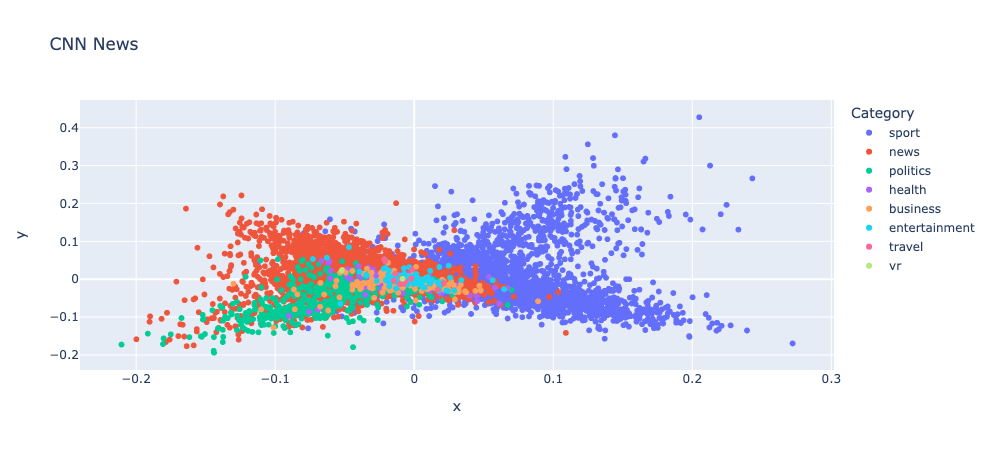

6.6. Natural Language Processing#
This section some tools to process and work with text.
6.6.1. TextBlob: Processing Text in One Line of Code#
Show code cell content
!pip install textblob
Show code cell content
!python -m textblob.download_corpora
TextBlob offers quick text analysis, such as sentiment detection, tokenization, noun phrase extraction, word frequency analysis, and spelling correction. Start by creating a TextBlob instance:
from textblob import TextBlob
text = "Today is a beautiful day"
blob = TextBlob(text)
Tokenize words:
blob.words
Extract noun phrases:
blob.noun_phrases
Analyze sentiment:
blob.sentiment
Count words:
blob.word_counts
Correct spelling:
text = "Today is a beutiful day"
blob = TextBlob(text)
blob.correct()
6.6.2. Convert Names into a Generalized Format#
Show code cell content
!pip install mlxtend
Names collected from different sources might have different formats. To convert names into the same format for further processing, use mlxtend’s generalize_names.
from mlxtend.text import generalize_names
generalize_names("Tran, Khuyen")
generalize_names("Khuyen Tran")
generalize_names("Khuyen Tran", firstname_output_letters=2)
6.6.3. sumy: Summarize Text in One Line of Code#
Show code cell content
!pip install sumy
Sumy is an easy-to-use tool for text summarization, offering 7 different methods. To summarize the article “How to Learn Data Science (Step-By-Step)” from DataQuest:
$ sumy lex-rank --length=10 --url=https://www.dataquest.io/blog/learn-data-science/
!sumy lex-rank --length=10 --url=https://www.dataquest.io/blog/learn-data-science/
6.6.4. Spacy_streamlit: Create a Web App to Visualize Your Text in 3 Lines of Code#
Show code cell content
!pip install spacy-streamlit
To quickly create an app to visualize the structure of a text, use spacy_streamlit.
To understand how to use spacy_streamlit, we add the code below to a file called streamlit_app.py:
%%writefile streamlit_app.py
import spacy_streamlit
models = ['en_core_web_sm']
text = "Today is a beautiful day"
spacy_streamlit.visualize(models, text)
On your terminal, type:
$ streamlit run streamlit_app.py
Output:
Show code cell content
!python -m spacy download en_core_web_sm
Show code cell source
!streamlit run streamlit_app.py
Click the URL and you should see something like below:

6.6.5. textacy: Extract a Contiguous Sequence of Words#
Show code cell content
!pip install spacy textacy
Show code cell content
!python -m spacy download en_core_web_sm
To extract sequences of words (n-grams), use the textacy library:
import spacy
from textacy.extract import ngrams
nlp = spacy.load("en_core_web_sm")
text = nlp("Ice cream is a soft frozen food made with sweetened and flavored milk fat.")
# extract sequences of 3 words
[n.text for n in ngrams(text, n=3)]
6.6.6. Num2Words: Convert Number to Words#
Show code cell content
!pip install num2words
The num2words library helps convert numerical values into words, making NLP tasks like matching numeric data to their textual equivalents easier:
from num2words import num2words
num2words(2019)
num2words(2019, to='ordinal')
num2words(2019, to='ordinal_num')
num2words(2019, to='year')
It also supports multiple languages:
num2words(2019, lang='vi')
num2words(2019, lang='es')
6.6.7. Numerizer: Standardizing Numerical Data in Text#
Show code cell content
!pip install numerizer
Converting textual numbers to numeric values is challenging due to diverse language representations.
Numerizer simplifies this process by turning various text formats into corresponding numbers.
from numerizer import numerize
numerize('four hundred and sixty two')
numerize('four hundred sixty two')
numerize('four sixty two')
numerize('four sixty-two')
6.6.8. Preprocess Text in One Line of Code with Texthero#
Show code cell content
!pip install texthero
Processing text in a DataFrame often involves writing lengthy code. Texthero simplifies this by enabling one-line preprocessing, including:
filling missing values
converting upper case to lower case
removing digits
removing punctuation
removing stopwords
removing whitespace
import numpy as np
import pandas as pd
import texthero as hero
text = [
"Today is a beautiful day",
"There are 3 ducks in this pond",
"This is. very cool.",
np.nan,
]
df = pd.DataFrame({"text": text})
df.text.pipe(hero.clean)
You can also create a custom cleaning pipeline by chaining different processing methods.
(
df.text
.pipe(hero.fillna)
.pipe(hero.remove_punctuation)
.pipe(hero.remove_stopwords)
.pipe(hero.remove_whitespace)
)
6.6.9. texthero: Reduce Dimension and Visualize Text in One Line of Code#
Show code cell content
!pip install 'gensim==3.6.0'
!pip install 'texthero==1.1.0'
!pip install unidecode
To visualize text data in 2D, typically, you need to clean, encode, and reduce the dimensions of your text, which can be tedious. Texthero simplifies this process into just two lines of code.
Below is an example using descriptions from CNN news articles. Each point represents an article, colored by its category.
import pandas as pd
import texthero as hero
df = pd.read_csv("small_CNN.csv")
df["pca"] = df["Description"].pipe(hero.clean).pipe(hero.tfidf).pipe(hero.pca)
import matplotlib.pyplot as plt
plt.figure(figsize=(10, 8))
hero.scatterplot(df, col="pca", color="Category", title="CNN News")

6.6.10. wordfreq: Estimate the Frequency of a Word in 36 Languages#
Show code cell content
!pip install wordfreq
If you need to check the frequency of a word in 36 different languages, wordfreq is an excellent tool.
It even covers words that occur as infrequently as once per 10 million words.
import matplotlib.pyplot as plt
import seaborn as sns
from wordfreq import word_frequency
word_frequency("eat", "en")
word_frequency("the", "en")
sentence = "There is a dog running in a park"
words = sentence.split(" ")
word_frequencies = [word_frequency(word, "en") for word in words]
sns.barplot(words, word_frequencies)
plt.show()
6.6.11. newspaper3k: Extract Meaningful Information From an Articles in 2 Lines of Code#
Show code cell content
!pip install newspaper3k nltk
To quickly extract meaningful information from an article in a few lines of code, use newspaper3k.
from newspaper import Article
import nltk
nltk.download("punkt")
url = "https://mathdatasimplified.com/2023/05/08/build-an-efficient-data-pipeline-is-dbt-the-key/"
article = Article(url)
article.download()
article.parse()
article.title
print(article.publish_date)
article.top_image
article.nlp()
print(article.summary)
article.keywords
6.6.12. Questgen.ai: Question Generator in Python#
Show code cell content
!pip install git+https://github.com/ramsrigouthamg/Questgen.ai
!pip install git+https://github.com/boudinfl/pke.git
!python -m nltk.downloader universal_tagset
!python -m spacy download en
Show code cell content
!wget https://github.com/explosion/sense2vec/releases/download/v1.0.0/s2v_reddit_2015_md.tar.gz
!tar -xvf s2v_reddit_2015_md.tar.gz
Generating questions manually from a document can be time-consuming. Questgen.ai automates this task, allowing you to quickly generate Boolean or FAQ-style questions.
from pprint import pprint
import nltk
nltk.download('stopwords')
from Questgen import main
payload = {
"input_text": """The weather today was nice so I went for a walk. I stopped for a quick chat with my neighbor.
It turned out that my neighbor just got a dog named Pepper. It is a black Labrador Retriever."""
}
qe = main.BoolQGen()
output = qe.predict_boolq(payload)
pprint(output)
output = qg.predict_shortq(payload)
pprint(output)
6.6.13. Word Ninja: Slice Your Lumped-Together Words#
Show code cell content
!pip install wordninja
Want to split compound words? Word Ninja is surprisingly effective at doing just that. Here are a few examples:
import wordninja
wordninja.split("honeyinthejar")
wordninja.split("ihavetwoapples")
wordninja.split("aratherblusterday")
6.6.14. textstat: Calculate Statistics From Text#
Show code cell content
!pip install textstat
To analyze text statistics such as readability scores and reading time, use the textstat library.
To calculate the Automated Readability Index (ARI), which indicates the grade level required to understand a text, use automated_readability_index. For example, an ARI of 10.8 means the text is suitable for 10th to 11th graders.
import textstat
text = "The working memory system is a form of conscious learning. But not all learning is conscious. Psychologists have long marveled at children’s ability to acquire perfect pronunciation in their first language or recognize faces."
textstat.automated_readability_index(text)
You can also measure the reading time of a text in seconds using reading_time:
textstat.reading_time(text, ms_per_char=14.69)
6.6.15. RapidFuzz: Rapid String Matching in Python#
Show code cell content
!pip install rapidfuzz
To find similar strings efficiently, use the RapidFuzz library.
from rapidfuzz import fuzz
You can calculate the similarity ratio between two strings using the fuzz.ratio function:
fuzz.ratio("Let's meet at 10 am tomorrow", "Let's meet at 10 am tommorrow")
fuzz.ratio("here you go", "you go here")
For token sorting and matching, use token_sort_ratio:
fuzz.token_sort_ratio("here you go", "you go here")
6.6.16. Checklist: Create Data to Test Your NLP Model#
Show code cell content
!pip install checklist torch
It can be time-consuming to create data to test edge cases of your NLP model. To quickly create data to test your NLP models, use Checklist.
In the code below, I use Checklist’s Editor to create multiple examples of negation in one line of code.
import checklist
from checklist.editor import Editor
editor = Editor()
editor.template("{mask} is not {a:pos} option.", pos=["good", "cool"], nsamples=5).data
editor.template("{mask} is not {a:neg} option.", neg=["bad", "awful"], nsamples=5).data
6.6.17. Top2Vec: Quick Topic Modeling in Python#
!pip install top2vec
Manually identifying topics from large text collections and having to specify the number of topics beforehand results in subjective, inconsistent topic modeling and requires significant trial and error.
Top2Vec automatically discovers topics by finding dense clusters of semantically similar documents and identifying the words that attract those documents together.
In this example, we will use the Top2Vec library to detect topics in a dataset of fake news articles.
Load the “Fake-News” dataset from OpenML:
from top2vec import Top2Vec
from sklearn.datasets import fetch_openml
news = fetch_openml("Fake-News")
text = news.data["text"].to_list()
Create a Top2Vec model with the text data, using the “learn” speed and 8 worker threads:
model = Top2Vec(documents=text, speed="learn", workers=8)
Get the number of topics detected by the model:
model.get_num_topics()
In this example, Top2Vec automatically determines the number and content of topics by analyzing document similarities in the embedding space
Get the topics in decreasing size:
topic_words, word_scores, topic_nums = model.get_topics(72)
print("\nSecond Topic - Top 5 Words and Scores:")
for word, score in zip(topic_words[1][:5], word_scores[1][:5]):
print(f"Word: {word:<20} Score: {score:.4f}")
print(f"Second Topic - Top 5 Words: {topic_words[1][:5]}")
Search for topics most similar to the keyword “president”:
topic_words, word_scores, topic_scores, topic_nums = model.search_topics(keywords=["president"], num_topics=2)
first_five_words = [topic[:5] for topic in topic_words]
print("Topics most similar to president:")
for topic_num, words in zip(topic_nums, first_five_words):
print(f"Topic {topic_num}: {words}")
Generate word clouds for the topics most similar to “president”:
for topic in topic_nums:
model.generate_topic_wordcloud(topic)
6.6.18. Expanding English Contractions in Text#
Show code cell content
!pip install contractions
Contraction can cause issues when processing text. To expand contractions using Python, use the library contractions
import contractions
sent = "I'm not sure, but I'd like to do it"
contractions.fix(sent)
6.6.19. inflect: Generate Plurals, Singulars, and Indefinite Articles#
Show code cell content
!pip install inflect
To generate plurals, singulars, or indefinite articles from given words, use inflect.
import inflect
p = inflect.engine()
p.plural_noun('he')
p.plural_verb('sees')
p.gender("feminine")
p.singular_noun("they")
if p.compare_verbs('sees', 'see'):
print("same word")
# Add the correct "a" or "an" for a given word
fruit1 = 'apple'
fruit2 = 'banana'
print(f"I got you {p.a(fruit1)} "
f"and {p.a(fruit2)}")
6.6.21. Chroma: The Lightning-Fast Solution to Text Embeddings and Querying#
Show code cell content
!pip install chromadb
Semantic search uses embedding to understand the meaning of search queries instead of relying solely on keyword matches to locate documents.
Embedding is like a translator converting words into numbers so that computers can understand. Chroma makes it easy to create embeddings from documents and find similar results with a few lines of code.
In the code below, the documents with IDs 1 and 2 closely match the given query text.
import chromadb
client = chromadb.Client()
collection = client.get_or_create_collection("test")
collection.add(
documents=[
"A man is eating food.",
"A man is eating yellow noodles.",
"The girl is carrying a baby.",
"A man is riding a horse.",
],
ids=["1", "2", "3", "4"],
)
query_result = collection.query(
query_texts=["A man is eating pasta." ],
n_results=2
)
print(query_result)
6.6.22. Galatic: Clean and Analyze Massive Text Datasets#
Show code cell content
!pip install galactic-ai
To clean, gain insights, and create embeddings from massive unstructured text datasets, use Galatic.
from galactic import GalacticDataset
filter_func = lambda x: len(x["content"]) < 1024
dataset = GalacticDataset.from_hugging_face_stream(
"tiiuae/falcon-refinedweb",
split="train",
filters=[filter_func],
dedup_fields=["content"],
max_samples=5000,
)
# Detect the language of the text
from collections import Counter
dataset.detect_language(field="content")
Counter(dataset["__language"])
Counter({'en': 4975,
'es': 7,
'fr': 7,
'de': 3,
'da': 2,
'ru': 1,
'nl': 1,
'pt': 1,
'sh': 1,
'eo': 1,
'ceb': 1})
# Get personal information from the text
dataset.detect_pii(
fields=["content"]
)
print("Email:", sum(dataset["__pii__email"]))
print("Phone:", sum(dataset["__pii__phone"]))
print("Username/Password:", sum(dataset["__pii__credential"]))
# Filter out all examples that have "blogspot" in the URL.
dataset = dataset.filter_string(
fields=["url"],
values=["blogspot"]
)
# Create embeddings
dataset.get_embeddings(input_field="content", backend="cpu")
# Cluster the embeddings with kmeans
dataset.cluster(n_clusters=5, overwrite=True)
dataset.get_cluster_info()
6.6.23. Efficient Keyword Extraction and Replacement with FlashText#
Show code cell content
!pip install flashtext
If you want to perform fast keyword extraction and replacement in text, use FlashText.
from flashtext import KeywordProcessor
keyword_processor = KeywordProcessor()
# Adding keywords with replacements
keyword_processor.add_keyword(keyword="Python")
keyword_processor.add_keyword(keyword="DS", clean_name="data science")
# Replacing keywords in text
new_sentence = keyword_processor.replace_keywords("PYTHON is essential for DS.")
new_sentence
6.6.24. BERTopic: Harnessing BERT for Interpretable Topic Modeling#
Show code cell content
!pip install bertopic
Managing and understanding large collections of text documents results in complex workflows with multiple preprocessing steps and difficult-to-interpret results. This causes data scientists to spend significant time trying to make sense of their document clusters and explaining them to stakeholders.
With BERTopic, you can leverage state-of-the-art language models to create more meaningful and interpretable topics. You get automatic topic labeling, visualization capabilities, and the flexibility to customize the modeling process according to your needs.
For this example, we use the popular 20 Newsgroups dataset which contains roughly 18000 newsgroups posts
from sklearn.datasets import fetch_20newsgroups
docs = fetch_20newsgroups(subset='all', remove=('headers', 'footers', 'quotes'))['data']
In this example, we will go through the main components of BERTopic and the steps necessary to create a strong topic model.
We start by instantiating BERTopic. We set language to english since our documents are in the English language.
from bertopic import BERTopic
topic_model = BERTopic(language="english", verbose=True)
topics, probs = topic_model.fit_transform(docs)
After fitting our model, we can start by looking at the results. Typically, we look at the most frequent topics first as they best represent the collection of documents.
freq = topic_model.get_topic_info()
freq.head(5)
-1 refers to all outliers and should typically be ignored. Next, let’s take a look at a frequent topic that were generated:
topic_model.get_topic(0) # Select the most frequent topic
Access the predicted topics for the first 10 documents:
topic_model.topics_[:10]
Visualize topics:
topic_model.visualize_topics()
We can visualize the selected terms for a few topics by creating bar charts out of the c-TF-IDF scores for each topic representation. Insights can be gained from the relative c-TF-IDF scores between and within topics. Moreover, you can easily compare topic representations to each other.
fig = topic_model.visualize_barchart(top_n_topics=8)
fig.show()
6.6.25. BertTopic: Enhance Topic Models with Expert-Defined Themes#
!pip install -U bertopic
Data scientists and analysts often need to guide their topic modeling process with domain knowledge or specific themes they want to extract, but traditional topic modeling approaches don’t allow for this kind of control over the generated topics.
BERTopic is a topic modeling library that leverages BERT embeddings and c-TF-IDF to create easily interpretable topics.
Seed words are predefined sets of words that represent themes or topics you expect or want to find in your documents. BERTopic allows you to guide the topic modeling process using these seed words. By providing seed words, you can:
Direct the model towards specific themes of interest
Incorporate domain expertise into the topic discovery process
Ensure certain important themes are captured
Here’s how to implement guided topic modeling with seed words:
from bertopic import BERTopic
from sklearn.datasets import fetch_20newsgroups
# Load example data
docs = fetch_20newsgroups(subset='all', remove=('headers', 'footers', 'quotes'))['data']
# Define seed topics
seed_topic_list = [["drug", "cancer", "drugs", "doctor"],
["windows", "drive", "dos", "file"],
["space", "launch", "orbit", "lunar"]]
# Create and train the model with seed topics
topic_model = BERTopic(seed_topic_list=seed_topic_list)
topics, probs = topic_model.fit_transform(docs)
# Look at three different topics in detail
print("\nFirst topic (Sports):")
print(topic_model.get_topic(0))
print("\nSecond topic (Cryptography):")
print(topic_model.get_topic(1))
print("\nFifth topic (Space Exploration):")
print(topic_model.get_topic(4))
The results show how seed words influence topic discovery:
Seed Word Integration: In Topic 5, space-related seed words (‘space’, ‘launch’, ‘orbit’, ‘lunar’) have high weights. The model expands on these words to include related terms like ‘shuttle’, ‘mission’, and ‘station’.
Natural Topic Discovery: The model discovers prominent topics like sports (Topic 0) and cryptography (Topic 1), despite being seeded with medical and computer themes. This shows that seed words guide the model without constraining it.
6.6.26. BertViz: Visualize NLP Model Attention Patterns#
Show code cell content
!pip install bertviz
Understanding how attention mechanisms work in transformer models is challenging due to the complex interactions between multiple attention heads across different layers.
BertViz allows you to interactively visualize and explore attention patterns through multiple views.
from transformers import AutoTokenizer, AutoModel, utils
utils.logging.set_verbosity_error() # Suppress standard warnings
# Find popular HuggingFace models here: https://huggingface.co/models
model_name = "microsoft/xtremedistil-l12-h384-uncased"
input_text = "The cat sat on the mat"
# Configure model to return attention values
model = AutoModel.from_pretrained(model_name, output_attentions=True)
tokenizer = AutoTokenizer.from_pretrained(model_name)
# Tokenize input text
inputs = tokenizer.encode(input_text, return_tensors='pt')
# Run model
outputs = model(inputs)
# Retrieve attention from model outputs
attention = outputs[-1]
# Convert input ids to token strings
tokens = tokenizer.convert_ids_to_tokens(inputs[0])
from bertviz import model_view, head_view
# Display model view
model_view(attention, tokens)
# Display head view
head_view(attention, tokens)
6.6.27. Beyond Keywords: Building a Semantic Recipe Search Engine#
Semantic search enables content discovery based on meaning rather than just keywords. This approach uses vector embeddings - numerical representations of text that capture semantic essence.
By converting text to vector embeddings, we can quantify semantic similarity between different pieces of content in a high-dimensional vector space. This allows for comparison and search based on underlying meaning, surpassing simple keyword matching.
Here’s a Python implementation of semantic search for recipe recommendations using sentence-transformers:
from sentence_transformers import SentenceTransformer
from sklearn.metrics.pairwise import cosine_similarity
# Step 1: Prepare our data
recipes = [
"Banana and Date Sweetened Oatmeal Cookies",
"No-Bake Berry Chia Seed Pudding",
"Deep-Fried Oreo Sundae with Caramel Sauce",
"Loaded Bacon Cheeseburger Pizza",
]
# Step 2: Load a pre-trained model for creating embeddings
model = SentenceTransformer('all-MiniLM-L6-v2')
# Step 3: Create embeddings for our recipe descriptions
recipe_embeddings = model.encode(recipes)
# Step 4: Function to find similar recipes
def find_similar_recipes(query, top_k=2):
# Create embedding for the query
query_embedding = model.encode([query])
# Calculate similarity
similarities = cosine_similarity(query_embedding, recipe_embeddings)[0]
# Get top k similar recipes
top_indices = similarities.argsort()[-top_k:][::-1]
return [(recipes[i], similarities[i]) for i in top_indices]
# Step 5: Test our semantic search
query = "healthy dessert without sugar"
results = find_similar_recipes(query)
print(f"Query: {query}")
print("Most similar recipes:")
for recipe, score in results:
print(f"- {recipe} (Similarity: {score:.2f})")
6.6.28. SkillNER: Automating Skill Extraction in Python#
Show code cell content
!pip install skillNer
Show code cell content
!python -m spacy download en_core_web_lg
Extracting skills from job postings, resumes, or other unstructured text can be time-consuming if done manually. SkillNER automates this process, making it faster and more efficient.
This tool can be useful for:
Recruiters to automate skill extraction for faster candidate screening.
Data scientists to extract structured data from unstructured job-related text.
Here’s a quick example:
import spacy
from spacy.matcher import PhraseMatcher
from skillNer.general_params import SKILL_DB
from skillNer.skill_extractor_class import SkillExtractor
# Load the spaCy model
nlp = spacy.load("en_core_web_lg")
# Initialize the SkillExtractor
skill_extractor = SkillExtractor(nlp, SKILL_DB, PhraseMatcher)
# Sample job description
job_description = """
You are a data scientist with strong expertise in Python. You have solid experience in
data analysis and visualization, and can manage end-to-end data science projects.
You quickly adapt to new tools and technologies, and are fluent in both English and SQL.
"""
# Extract skills from the job description
annotations = skill_extractor.annotate(job_description)
annotations
skill_extractor.describe(annotations)
6.6.29. nlpaug: Enhancing NLP Model Performance with Data Augmentation#
Show code cell content
!pip install nlpaug
Limited training data for natural language processing tasks often results in overfitting and poor generalization of models.
The nlpaug library offers diverse NLP data augmentation techniques, helping researchers expand datasets and create robust models.
import nlpaug.augmenter.char as nac
import nlpaug.augmenter.word as naw
import nlpaug.augmenter.sentence as nas
Substitute character by keyboard distance:
text = "The quick brown fox jumps over the lazy dog."
aug = nac.KeyboardAug()
augmented_text = aug.augment(text)
print("Original:")
print(text)
print("Augmented Text:")
print(augmented_text)
Insert character randomly:
aug = nac.RandomCharAug(action="insert")
augmented_text = aug.augment(text)
print("Original:")
print(text)
print("Augmented Text:")
print(augmented_text)
Substitute word by spelling mistake words dictionary:
aug = naw.SpellingAug()
augmented_texts = aug.augment(text, n=3)
print("Original:")
print(text)
print("Augmented Texts:")
print(augmented_texts)
Insert word by contextual word embeddings (BERT, DistilBERT, RoBERTA or XLNet):
aug = naw.ContextualWordEmbsAug(
model_path='bert-base-uncased', action="substitute")
augmented_text = aug.augment(text)
print("Original:")
print(text)
print("Augmented Text:")
print(augmented_text)
Substitute word by WordNet’s synonym:
aug = naw.SynonymAug(aug_src='wordnet')
augmented_text = aug.augment(text)
print("Original:")
print(text)
print("Augmented Text:")
print(augmented_text)
Split word to two tokens randomly:
aug = naw.SplitAug()
augmented_text = aug.augment(text)
print("Original:")
print(text)
print("Augmented Text:")
print(augmented_text)
6.6.30. GLiNER: The Lightweight Alternative to LLMs for Custom NER#
Show code cell content
!pip install gliner spacy
Show code cell content
!python -m spacy download en_core_web_sm
Traditional NER models are limited to predefined entity types. For example, spaCy’s default English model is trained to recognize only the follwoing entity types:
PERSON (e.g., “John Smith”)
ORG (e.g., “Microsoft”)
GPE (e.g., “New York”)
DATE (e.g., “June 15th”)
MONEY (e.g., “$500”)
Example of a traditional approach with spaCy:
import spacy
# Load a pre-trained model with fixed entity types
nlp = spacy.load("en_core_web_sm")
text = """
Maria Rodriguez loves making sushi and pizza in her spare time. She practices yoga
and rock climbing on weekends in Boulder, Colorado. Her friend Tom enjoys baking
fresh croissants and often brings them when they go hiking together in the Rocky Mountains.
"""
# Can only detect pre-defined entity types
doc = nlp(text)
for ent in doc.ents:
print(f"{ent.text} => {ent.label_}")
Identifying and extracting other types of entities from text requires either training separate models for each entity type or using large language models, which results in high computational costs and resource requirements.
GLiNER allows you to extract any custom entity types from text using a lightweight model. You can specify the entity types you want to extract at inference time without retraining the model.
from gliner import GLiNER
# Initialize the model
model = GLiNER.from_pretrained("urchade/gliner_medium-v2.1")
text = """
Maria Rodriguez loves making sushi and pizza in her spare time. She practices yoga
and rock climbing on weekends in Boulder, Colorado. Her friend Tom enjoys baking
fresh croissants and often brings them when they go hiking together in the Rocky Mountains.
"""
# Define custom entity types
labels = ["Person", "Food", "Hobby", "Location"]
# Extract entities
entities = model.predict_entities(text, labels)
# Print the extracted entities
for entity in entities:
print(f"{entity['text']} => {entity['label']}")
This example shows how GLiNER can identify multiple custom entity types (persons, foods, hobbies, and locations) in a single pass without needing separate models or extensive training for each category.